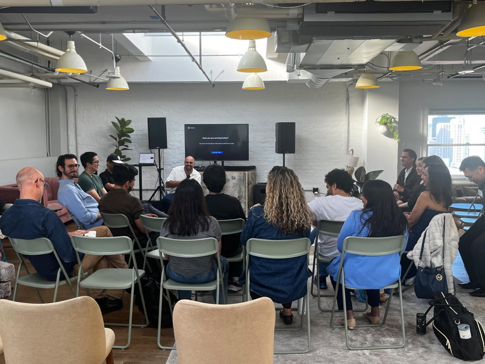

San Francisco
AI is changing work. What should stay human?
AI is changing the work. We help people lead through it. Workshops, coaching, and research on role change, trust, and how people and agents work together.

Three doors
Human-agent teams, role change, and leadership under uncertainty. Two workshops, then the work inside.
For leadership teams, managers, and teams → FoundersConflict. Overwhelm. Decisions. Coaching for founders and founding pairs.
One to one, or with your co-founder → EveryoneA public workshop where you find your own line. Small, in person, free.
What Should Stay Human? →The questions underneath the rollout
Training teaches the tool. It can’t decide this.
- Human-agent teams. Who decides, who reviews, who is accountable, and what should stay human.
- Role change. What is changing in the work, what people still own, and what they need to build next.
- Leadership under uncertainty. How leaders and managers create clarity and trust without pretending to know what they don’t.
- Responsible enablement. How a team turns alignment into one bounded workflow experiment with human review and a real stopping rule.
We help people have those conversations and turn them into clearer agreements, stronger leadership, and practical ways of working. For organizations →
Next in San Francisco and online
Newsletter
What Should Stay Human.
Field notes, research, and upcoming conversations about AI, work, leadership, and human agency. A few times a month. Registering for an event never adds you to this list.
Who you’ll work with
Nima Imani.
ICF-certified coach and solution architect. Neo4j, EY, and a CTO seat before that. Runs the Friday founder group at SF Commons and publishes research from what people share in these rooms.